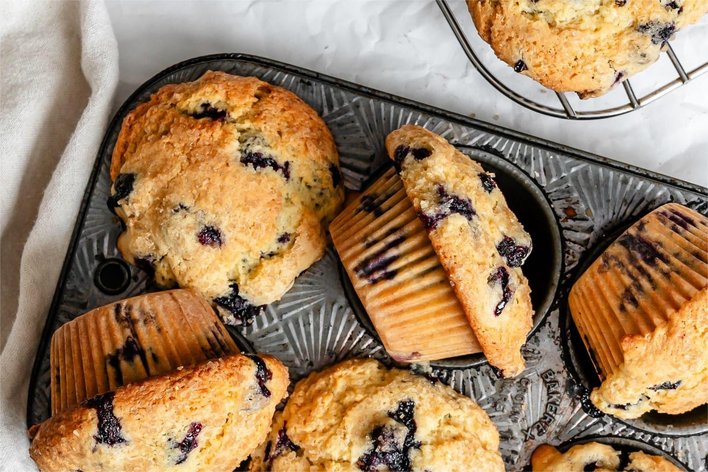

Blueberry Muffins
This blueberry muffin recipe makes eight extra large and yummy breakfast muffins with a sugary-cinnamon crumb topping. I usually double the recipe and fill the muffin cups just to the top for a wonderful, extra-generously-sized, deli-style muffin. Add extra blueberries if you want!
Blueberry Muffin Incredients
These are the ingredients you’ll need to make this blueberry muffins recipe at home:
- For the muffins:all-purpose flour, white sugar, baking powder, salt, vegetable oil, an egg, milk, and fresh blueberries
- For the topping:white sugar, all-purpose flour, butter, and cinnamon
How to Make Stuffed Eggplant
You’ll find the full, step-by-step recipe below:
- Mix the dry ingredients in a bowl.
- Mix the wet ingredients in a liquid measuring cup.
- Add the wet mixture to the dry mixture, then fold in the blueberries.
- Make the topping.
- Pour the batter into a prepared muffin tin and sprinkle with the topping.
- Bake in the preheated oven until the toothpick comes out clean.